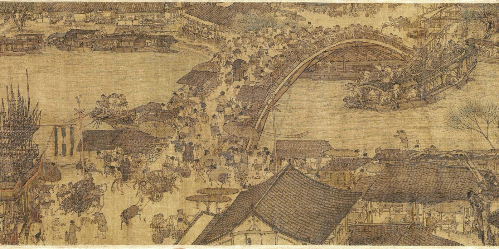

铺绢 · 调墨 · 候一城烟火
北宋风物 · 春日手绘画境
桥上是往来，桥下是行舟。沿一段河岸，走近千年前的寻常一日。
WASD 行走 拖动画面环顾
左下方向盘行走 · 右侧拖动环顾
壹 · 虹桥街市风过柳梢 · 一城烟火
画中细处 · 壹
慢慢走，不必赶路
触屏：左下方向盘行走，在画面右侧拖动环顾。
依据故宫博物院藏北宋张择端《清明上河图》的虹桥、舟楫与街市细节进行空间重构。画作采用散点透视，不能直接转换为唯一的三维空间；背面、尺度及通行路线含创作补足。
以张择端本的木桥与市井形制为根基，融入温暖手绘动画的光色、春叶与细腻生活。春日设色、人物动作及环境声均为此次漫游的艺术创作。
故宫博物院藏 · 北宋张择端本

原画采用散点透视；画境保留虹桥、舟船和桥市的关系，将这一段重构为连续的步行空间。
公共领域画作的扫描细部，来自 Wikimedia Commons。扫描的亮度与色彩经过发布者调整，不作为原作精确色样。
请使用支持 WebGL 2 的现代浏览器。